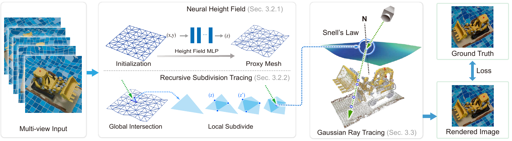
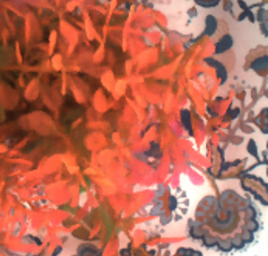
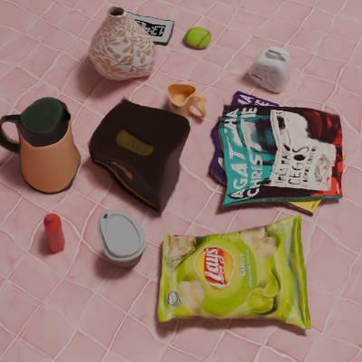
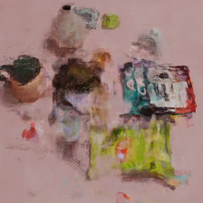
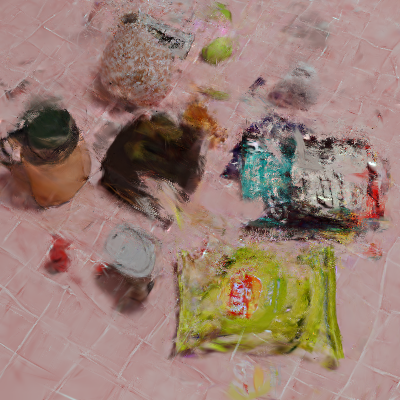

RefracGS: Novel View Synthesis Through Refractive Water Surfaces with 3D Gaussian Ray Tracing
Abstract
Novel view synthesis (NVS) through non-planar refractive surfaces presents fundamental challenges due to severe, spatially varying optical distortions. While recent representations like NeRF and 3D Gaussian Splatting (3DGS) excel at NVS, their assumption of straight-line ray propagation fails under these conditions, leading to significant artifacts. To overcome this limitation, we introduce RefracGS, a framework that jointly reconstructs the refractive water surface and the scene beneath the interface. Our key insight is to explicitly decouple the refractive boundary from the target objects: the refractive surface is modeled via a neural height field, capturing wave geometry, while the underlying scene is represented as a 3D Gaussian field. We formulate a refraction-aware Gaussian ray tracing approach that accurately computes non-linear ray trajectories using Snell's law and efficiently renders the underlying Gaussian field while backpropagating the loss gradients to the parameterized refractive surface. Through end-to-end joint optimization of both representations, our method ensures high-fidelity NVS and view-consistent surface recovery. Experiments on both synthetic and real-world scenes with complex waves demonstrate that RefracGS outperforms prior refractive methods in visual quality, while achieving ~15x faster training and real-time rendering at 200 FPS.
Pipeline

Results
Metrics on NeRFrac Dataset (Real + Synthetic)
Comparison on NeRFrac Real Dataset

Comparison on NeRFrac Synthetic Dataset
Comparison on RefracGS Dataset



Applications
Novel View Synthesis
Refraction Removal
Surface Editing
BibTeX
@article{YourPaperKey2024,
title={Your Paper Title Here},
author={First Author and Second Author and Third Author},
journal={Conference/Journal Name},
year={2024},
url={https://your-domain.com/your-project-page}
}